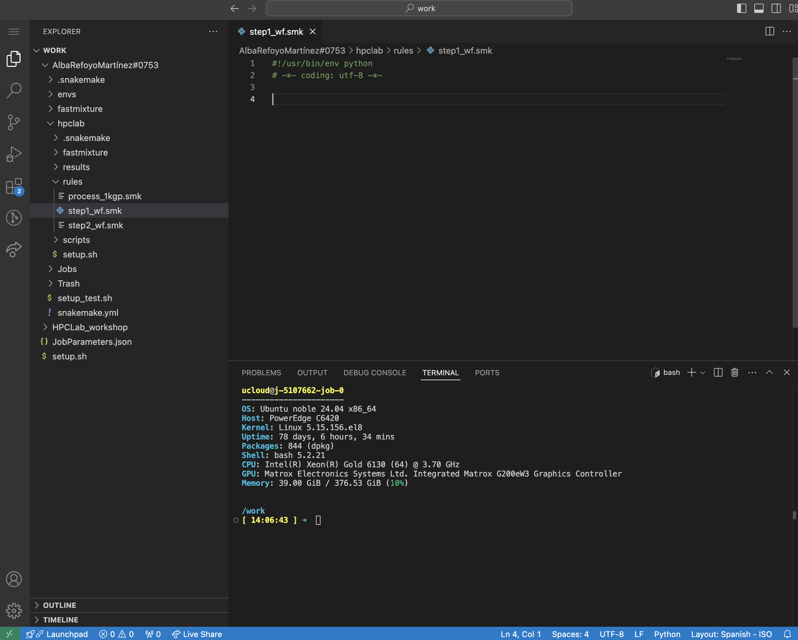

Follow these steps to run the exercises on UCloud. First, mount the following two drives, use the hpc-pipes/setup.sh initialization file, and ask for 2 CPUs so we can run things in parallel:
YourNameSurname#xxxx: save your results/files here.
shared/hpclab-workshop: contains input files and scripts. You can read-only access from this directory (no write permissions).
Next, activate snakemake environment.
conda deactivate
# make sure no env is active!
conda activate snakemake Finally, navigate to your personal drive and use the project directory you created yesterday to save all the output files from the exercises!
You can choose to run your tasks either locally or on an accessible HPC. Refer to the Welcome page for the software you need to install. Next, create a new environment using the YAML file, activate the conda environment, and download the data.
Day 2 - Part 3
A. Snakemake
It’s time to create your own pipeline and experiment with its different components!
If you need help, try to find answers to your questions by consulting the Snakemake documentation, as it is a great resource with many examples. That’s how you would do it in a real-world scenario.
In this section, we will be working with a tabulated metadata file, samples_EB.tsv, which documents samples from a project on bearded seals (sp. Erignathus barbatus). Each row represents a sample, and the columns contain various attributes for that sample. The file is designed to be simple and small, making it easy to work with and manipulate across tasks. However, the specifics of the data aren’t the primary focus.
- ID: Unique identifier for each sample.
- genomic_species: Species classification based on genomic data.
- subspecies: Specific subspecies classification.
- plot_subspecies: Visualization label for subspecies.
- country: Country of origin.
- location: Specific location of the sample within the country.
- AbbrevMap: Abbreviated mapping of location details.
- lat and long: Latitude and longitude coordinates.
- lon.utm and lat.utm: UTM (Universal Transverse Mercator) coordinates.
- sex: Sample gender.
- year: Year the sample was collected.
- tissue: Tissue type used for sample collection.
- coverage and samtools.coverage: Coverage metrics for sample analysis.
- nuDNA coverage and nuDNA coverage st.dev: Nuclear DNA coverage and its standard deviation.
- total_sites: Total genomic sites assessed.
- homozygous_sites: Count of homozygous sites.
- proportion_heterozygous: Proportion of heterozygous sites.
You will be working and running the workflow from hpclab, so make sure it’s set as your working directory. Launch the Coder application (by selecting Open interface).

Preparation step
- Directory setup: Inside
hpclab, create two subdirectories,scriptsandrules.scripts: save all python/r external scripts.rules: save all your snakefiles here!
- File creation: You will need to create two files for this exercise:
Open a new file named
step1_wf.smkin therulesdir and include the following two lines of code:#!/usr/bin/env python # -*- coding: utf-8 -*-What are those lines for?!/usr/bin/env python: tells the system to use the Python interpreter to execute the script-*- coding: utf-8 -*-: specifies the character encoding for the file as UTF-8
Finally, create a Python file named
preprocess.pyin thescriptsfolder of your project directory. Add this code:preprocess.py
#!/usr/bin/env python # -*- coding: utf-8 -*- import sys import pandas as pd def preprocess(input_file, output_file): df = pd.read_csv(input_file, sep='\t') # Read the input TSV file df_cleaned = df.dropna() # Remove rows with missing values df_cleaned.to_csv(output_file, sep='\t', index=False) # Save the cleaned data to output file if __name__ == "__main__": input_file = sys.argv[1] # First argument: input file output_file = sys.argv[2] # Second argument: output file preprocess(input_file, output_file)
Your directory layout should look like this:
# Project structure
mypersonaldrive/
│
├── envs/
│ └── [environment files here]
│
└── hpclab/
├── results/
│ ├── EAS.txt
│ ...
├── rules/
│ ├── step1_wf.smk
└── scripts
└── preprocess.pyPart 1: Writing the first rule
Let’s define a very simple workflow of one task (S.1). With step1_wf.smk open, follow these steps to create a rule called preprocess:
- Name of the rule:
preprocess
- Avoid using wildcards for now
- Define inputs and outputs:
- Input: metadata file (‘/work/HPCLab_workshop/data/samples_EB.tsv’)
- Output: preprocessed file (‘results/samples_EB_cleaned.tsv’)
- Use the
shelldirective to run a Python script that removes samples with missing values (NA)
step1_wf.smk
rule firstrule:
input: "/path/to/input"
output: "/path/to/output"
shell:
"somecommand {output}"Your rule should replicate the behavior of the bash script shown below.
Terminal
INFILE="/work/HPCLab_workshop/data/samples_EB.tsv"
OUTPUT="/work/<nameSurname#xxx>/hpclab/results_eb/samples_EB_cleaned.tsv"
# This is what the pipeline's task is:
python scripts/preprocess.py $INFILE $OUTFILERunning the workflow
All set! You’re ready to run the workflow now. As a best practice, we recommend starting with a dry-run to ensure everything works correctly before executing the full workflow:
snakemake -s rules/step1_wf.smk -nIf there are no errors, go ahead and run it!. Since this workflow contains only one rule, defining the target (e.g., through rule all or using the name of the rule) is unnecessary—snakemake will execute the preprocess rule directly with the following command:
snakemake -s rules/step1_wf.smk -c1Did the pipeline create the expected output file in the results folder?
step1_wf.smk
rule preprocess:
input:
"/work/HPCLab_workshop/data/samples_EB.tsv"
output:
"results/samples_EB_cleaned.tsv"
shell:
"""
python scripts/preprocess.py {input} {output}
"""Part 2: Generalising the rule
What if we wanted to run this same rule for the dataset used in the previous Snakemake exercise? How could we modify the rule (and so, the workflow) to accommodate other datasets?
- Input: “/work/HPCLab_workshop/data/samples_1kgp.tsv”
- Output: “results/samples_1kgp_cleaned.tsv”
You can leverage Snakemake’s customization by introducing variables through either params, wildcards, or other mechanisms. By using these variables, you can dynamically adjust input files, tool settings, or even paths, making it easier to switch datasets or configurations without manually editing the rule each time.
Wildcards
Wildcards are dynamic placeholders in rule definitions that allow for flexible input or output file names. You define them in your rules, and their actual values are determined when the workflow is executed, enabling versatile file handling across different workflow runs.
Could you modify the previous rule so that you can run the workflow for different datasets? Not sure how?
- Define a wildcard named
datasetwhich represents the variable parts of your input or output (e.g.,EBin this case) - Dry-run, is it working
snakemake -s rules/step1_wf.smk -np results/samples_EB_cleaned.tsv
Does Snakemake’s dry-run command return the message “Nothing to be done”?
Let’s explore other commands! You can force a run in Snakemake even if the output file already exists by using the --force option in your command. Try it out!
Did Snakemake rerun the workflow and successfully produce the output file again?
step1_wf.smk
rule preprocess:
input:
"/work/HPCLab_workshop/data/samples_{dataset}.tsv"
output:
tsv="results/samples_{dataset}_cleaned.tsv"
shell:
"""
python scripts/preprocess.py {input} {output}
"""Terminal
# dry-run
snakemake -s rules/step1_wf.smk -n results/samples_EB_cleaned.tsv
# force re-running preprocess step
snakemake -s rules/step1_wf.smk --force -c1 results/samples_EB_cleaned.tsvPart 3: Helper functions and target rules
By default, Snakemake always wants to execute the first rule in the Snakefile. This gives rise to “pseudo-rules” at the beginning of the file, which are used to define targets. Typically, this rule is named all. Let’s look at an example:
option1.smk
rule all:
input:
"ds1.file.A.gz",
"ds2.file.A.gz",
"ds3.file.A.gz"
rule file_conversion:
input:
"{dataset}/file.{group}.txt"
output:
"{dataset}/file.{group}.gz"
shell:
"somecommand {input} > {output}"Alternatively, you can use a Python list to define the inputs:
option2.smk
DATASETS = ["ds1", "ds2", "ds3"]
rule all:
input:
[f"{dataset}/file.A.gz" for dataset in DATASETS]But how does it look if we use a helper function, e.g., expand():
option3.smk
DATASETS=["ds1", "ds2", "ds3"]
rule all:
input:
expand("{dataset}/file.A.gz", dataset=DATASETS)In all cases, for each dataset in the Python list DATASETS, the file {dataset}/file.A.gz is requested. Snakemake will recognise that these files can be created by multiple applications (executions) of the rule file_conversion.
It’s time for you to define the target rule rule all within the Snakefile and utilize helper functions. Instead of using a Python list comprehension to specify input files, please use expand() function!
- Declare the variable DATASETS at the top
- Define
rule alland use theexpand()function to specify the input files (our targets, corresponding to the last output) - If you need it, have a look at Snakemake documentation
Does your Snakefile resemble the one in the solution above?
Do you get any error if you do a dry-run?
step1_wf.smk
DATASETS = ["EB", "1kgp"]
rule all:
input:
expand("results/samples_{dataset}_cleaned.tsv", dataset=DATASETS)
rule preprocess:
input:
"/work/HPCLab_workshop/data/samples_{dataset}.tsv"
output:
tsv="results/samples_{dataset}_cleaned.tsv"
shell:
"""
python scripts/preprocess.py {input} {output}
"""Let’s assume that step1_wf.smk includes all the necessary steps for preprocessing our data. Now, let’s add other components to the workflow to further process the data. The aim of the next exercise is to modularise our workflow and decorate the workflow using some advanced functionality.
Part 4: Modularization
Let’s walk through an example of modularization. In the example below, the statement module step1_workflow registers the external workflow as a module by specifying the path to its Snakefile. The second statement declares that all rules of those modules are available in the current workflow, except for ruleExtra. The as step1_* at the end renames all those rules with a common prefix (e.g., rule preprocess would become rule step1_preprocess). This renaming is optional but very useful for avoiding rule name conflicts (e.g., we could have another rule on this new snakefile named preprocess). Want to learn more? Click here.
example.smk
module step1_workflow:
snakefile:
# You can use plain paths, URL, or host code providers (e.g,. GitHub)
"path/to/snakefile" # path relative to the current snakefile
use rule * from step1_workflow exclude ruleExtra as step1_*Now it’s time to implement it following these steps:
- File creation: open a new file named
step2_wf.smkand define the external workflowstep1_wf.smkas a module, making all rules available by explicitly importing them and renaming them asstep1_*. Hint: the example above. - Delete the output file
results/samples_EB_cleaned.tsvto test the newly implemented feature. - Dry-run
step2_wf.smkusing the-pcommand (--printshellcmds)
step2_wf.smk
#!/usr/bin/env python
# -*- coding: utf-8 -*-
module step1_wf:
snakefile:
"step1_wf.smk"
use rule * from step1_wf as step1_*Did you run these commands:
Terminal
# rm file
rm results/samples_EB_cleaned.tsv
# dry-run
snakemake -s rules/step2_wf.smk -npBuilding DAG of jobs...
Job stats:
job count
---------------- -------
step1_all 1
step1_preprocess 1
total 2
rule step1_preprocess:
input: /work/HPCLab_workshop/data/samples_EB.tsv
output: results/samples_EB_cleaned.tsv
jobid: 1
reason: Missing output files: results/samples_EB_cleaned.tsv
wildcards: dataset=EB
resources: tmpdir=<TBD>
python scripts/preprocess.py /work/HPCLab_workshop/data/samples_EB.tsv results/samples_EB_cleaned.tsv
rule step1_all:
input: results/samples_EB_cleaned.tsv, results/samples_1kgp_cleaned.tsv
jobid: 0
reason: Input files updated by another job: results/samples_EB_cleaned.tsv
resources: tmpdir=<TBD>Shell commands can sometimes involve more than just input and output files along with static flags. In particular, there may be situations where additional parameters must be configured based on the wildcard values specific to a job. To facilitate this, Snakemake provides the params directive, enabling you to define custom parameters for your rules.
Many software tools accept arguments to set specific thresholds. For instance, one such parameter could be the p-value threshold (e.g. default value of 0.05). However, you might need to change the significance level depending on the analysis, such as when correcting for multiple testing or when a stricter criterion is needed. You can see more examples in the documentation.
Params
Let’s add a new rule named filter_year in step2_wf.smk that replicates the behavior of the bash script below:
filter_year.sh
INFILE="results/samples_EB_cleaned.tsv"
OUTFILE="results/samples_EB_filtered.tsv"
CUTOFF=2000
# Python script filters the metadata based on the year the samples were collected
python scripts/filter_year.py -i $INFILE -o $OUTFILE -y $CUTOFFPlease, use named inputs (e.g., meta for the input and fi for the output). Named inputs are particularly useful when multiple files are needed for running a software tool.
You can find the Python file on UCloud: PATH="/work/HPCLab_workshop/scripts/filter_year.py". Copy it to your scripts directory.
filter_year.py
#!/usr/bin/env python
# -*- coding: utf-8 -*-
import pandas as pd
import numpy as np
import argparse
def filter_year(input_file, output_file, year):
# Read the input file into a DataFrame
df = pd.read_csv(input_file, sep='\t')
# Filter the DataFrame based on the 'year' column
df_filtered = df[df['year'] >= year]
# Save the filtered DataFrame to the output file
df_filtered.to_csv(output_file, sep='\t', index=False)
if __name__ == "__main__":
# Set up argument parsing
parser = argparse.ArgumentParser(description="Filter input data by year.")
parser.add_argument('-i', '--input', required=True, help='Input file path')
parser.add_argument('-o', '--output', required=True, help='Output file path')
parser.add_argument('-y', '--year', type=int, required=True, help='Year to filter by')
# Parse the command-line arguments
args = parser.parse_args()
# Call the filter function with the parsed arguments
filter_year(args.input, args.output, args.year)Now, run step2_wf.smk. How many samples got filtered out? Compared the *_cleaned.tsv vs the *_filtered.tsv.
rule filter_year:
input:
meta="results/samples_EB_cleaned.tsv"
output:
fi="results/samples_EB_filtered.tsv"
params:
cutoff=2000
shell:
"""
python scripts/filter_year.py -i {input.meta} -o {output.fi} -y {params.cutoff}
"""Almost done! We want our workflow to be as customizable as possible so that it can easily be adapted to new data. For this purpose, snakemake provides a config file mechanism.
Config files
Modify your Snakemake workflow to include a YAML configuration file and use it within the filter_year rule. Configuration files are typically located at the top level of the project directory, e.g., hpclab (often alongside the Snakefile). While you usually reuse a pipeline, it’s advisable to create a new config file for each new dataset or project. This approach helps isolate project-specific configurations and avoids modifying the original pipeline.
Whitespace is a key part of YAML’s formatting. Unless otherwise indicated, newlines indicate the end of a field. You structure a YAML document with indentation. The indentation level can be one or more spaces. The specification forbids tabs because tools treat them differently.
- Define the YAML config file
config_step2.yml
year:
cutoff: 2000- Define the config file at the top of your Snakefile
step2_wf.smk
configfile:"/path/to/config_step2.yml"- Modify the
filter_yearrule
step2_wf.smk
rule ...:
params:
cutoff=config['year']['cutoff']Verify that the workflow functions correctly by testing with various cutoff values. Use the --forceall flag.
Add a log directive to the
filter_yearrule to collect stderr output.Hint:
2> {log}. It is best practice to store all log files in a subdirectorylogs/, prefixed by the rule or tool name.Rerun the workflow and see how the log files are created.
Do the same using the
benchmarkdirective.